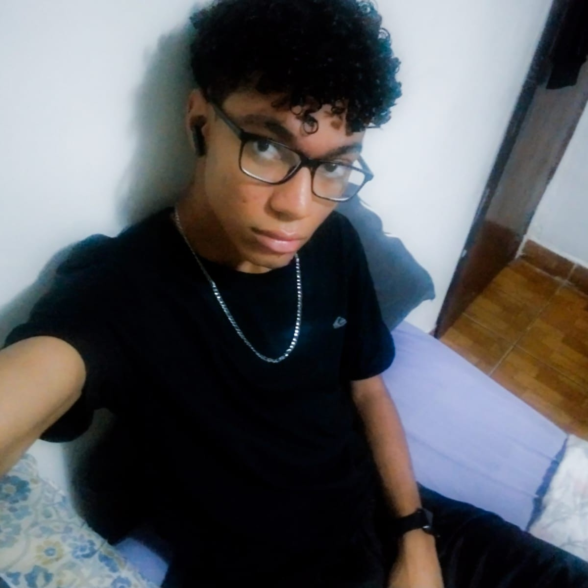
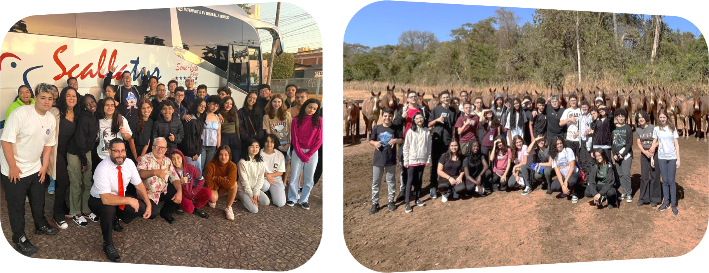
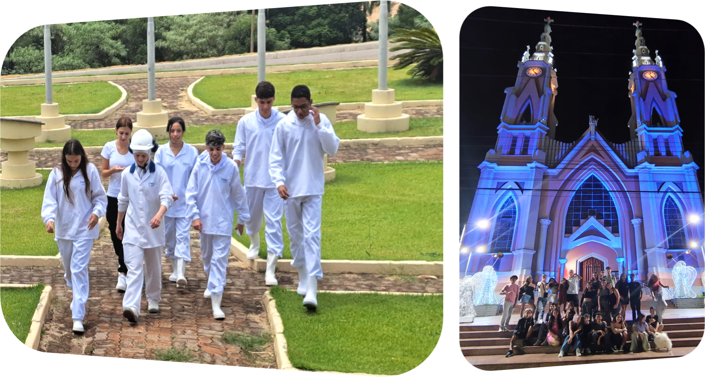
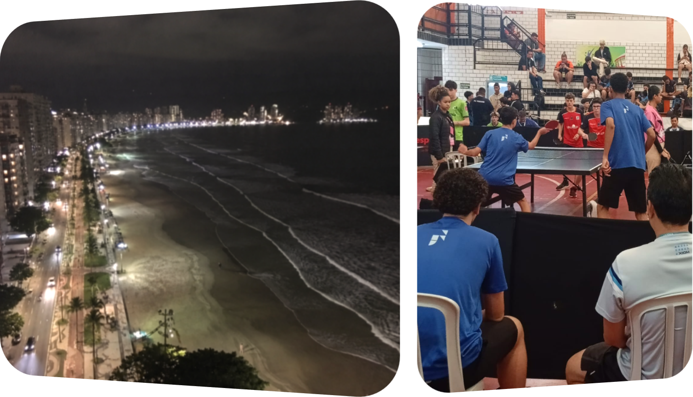
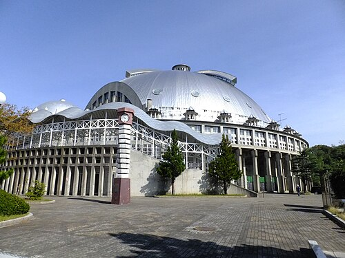
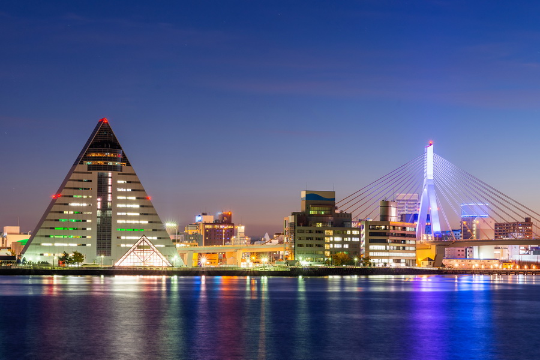

👋 Um pouco sobre João Victor
Quem sou eu❔

Muita gente me chama de "JV", exceto minha
família que insiste em "Victor" (com C). Sou uma
pessoa ambivertida que adora cabelo cacheado,
tecnologia e
praticar esportes, além de ser muito
competitivo em praticamente
tudo.
Meus gostos
- 🏓Tênis de mesa
- ⚽Futebol
-
🧑💻Tecnologia
- 🖍️Front-end
- 🐍Back-end
- 🎲Dados
- Tudo e quase java ☕
- 📺Animes
🗺️ Aonde já fui?
📍Goiânia - Goiás

Goiânia foi a minha segunda viagem durante o Programa de Férias do
Germinare Business.
Lá conheci a fábrica de bovinos da JBS e (a
parte mais legal) a JBJ, empresa a qual atua diretamente
com os cuidados dos animais.
📍Rio Grande do Sul/RG

Durante meu último Programa de Férias da escola, conheci Seberi, Iraí e
Ametista do Sul.
Pequenas cidades do Rio Grande Sul, foi lá que
visitei e aprendi muito na fábrica de suínos da JBS,
desenvolvendo melhorias através da metodologia PDCA
(Plan Do Check Act).
🏖️Praia Grande

Ano passado fui representar a escola no JEESP em Praia Grande pela
modalidade de tênis de mesa.
Lá joguei como jogador principal da esquipe que chegou até as quartas de
final da competição.
Apesar de termos voltado cedo para casa, foi uma das minhas viagens
favoritas, anseio por um
resultado melhor este ano.
🏆Top 3 lugares que quero conhecer
-
🍙Japão
-
🏓Ginásio Munipal de Akita

🔗Como é Akita?
🔗Ginásio Municipal de Akita
-
❄️Aomori

🔗Como é Aomori? -
🌆Tóquio

🔗Site oficial de Tóquio
O Japão é um país que une boa parte de meus gostos: Tecnologia, Tênis de Mesa e Animes.
-
🏓Ginásio Munipal de Akita